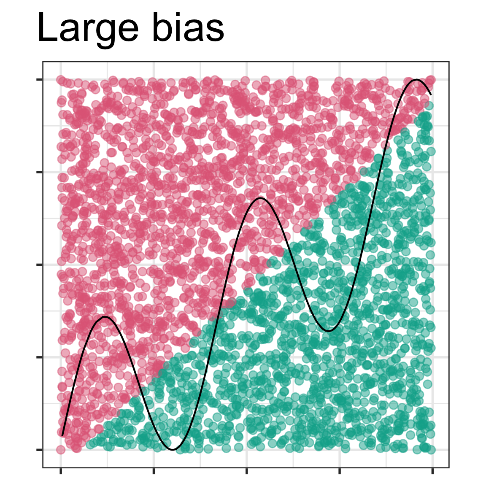
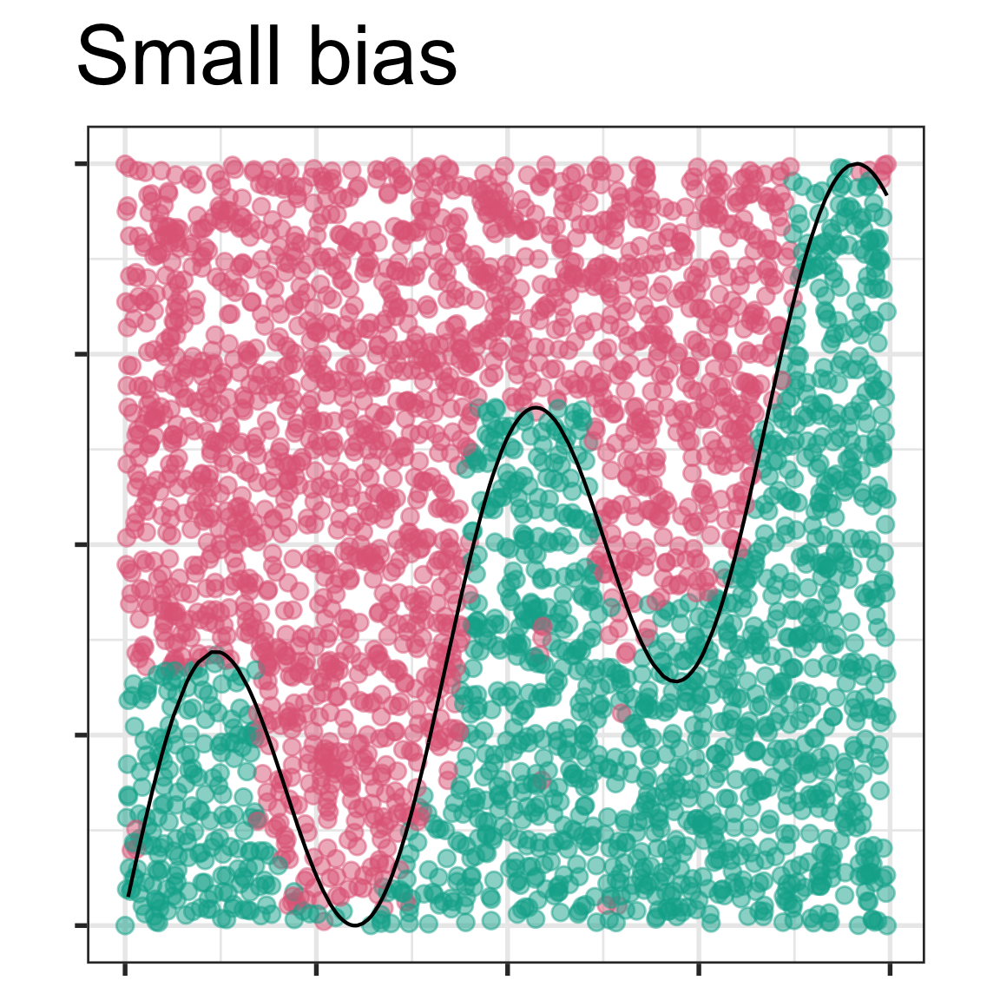
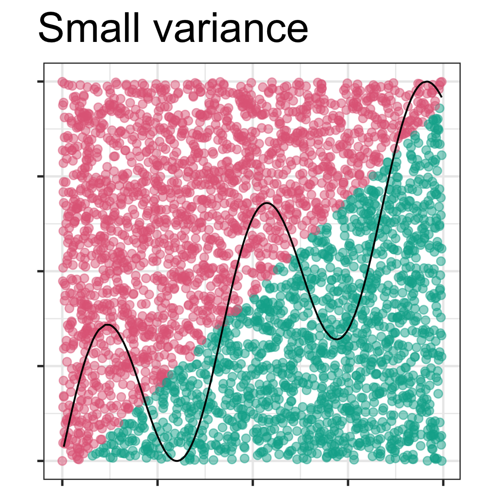
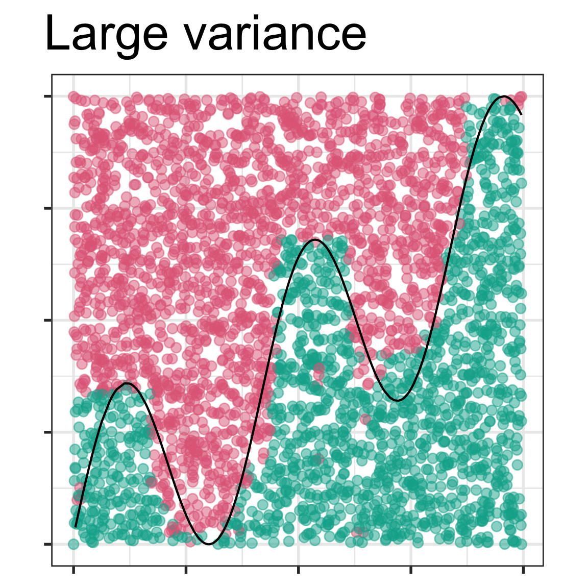
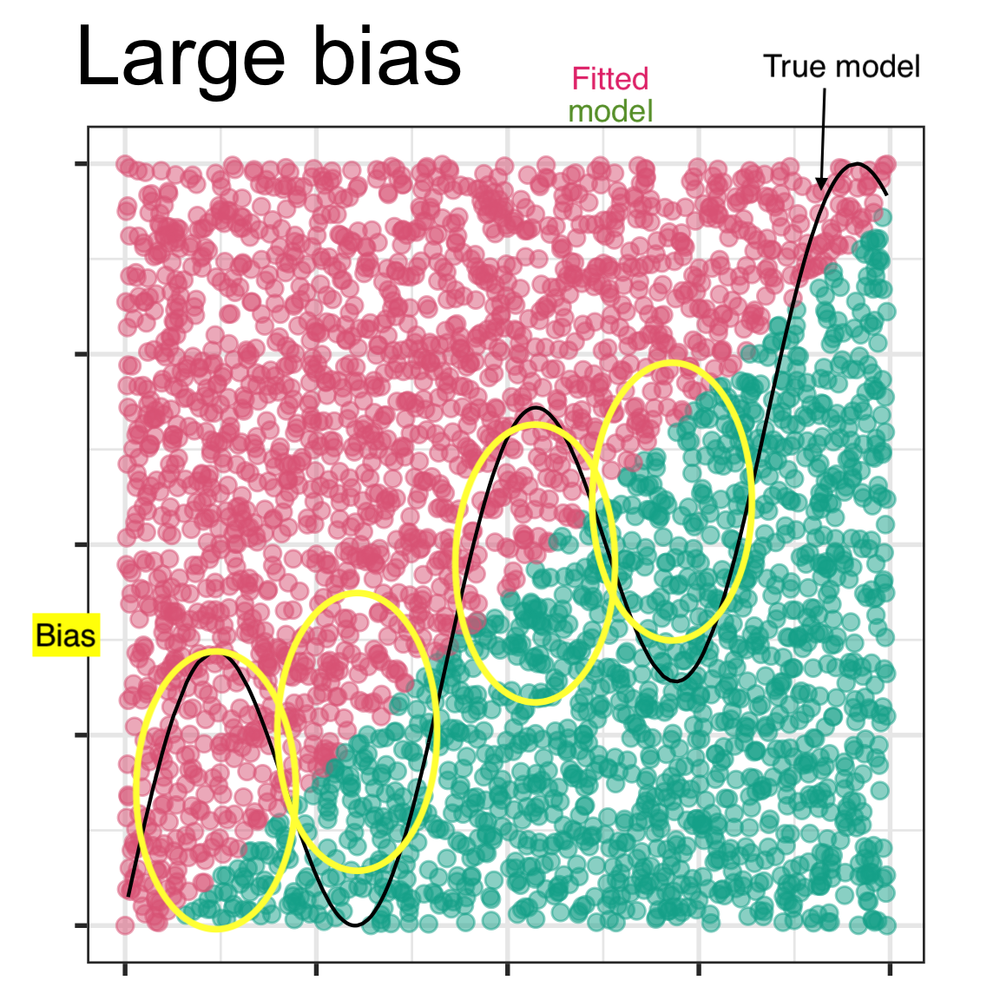
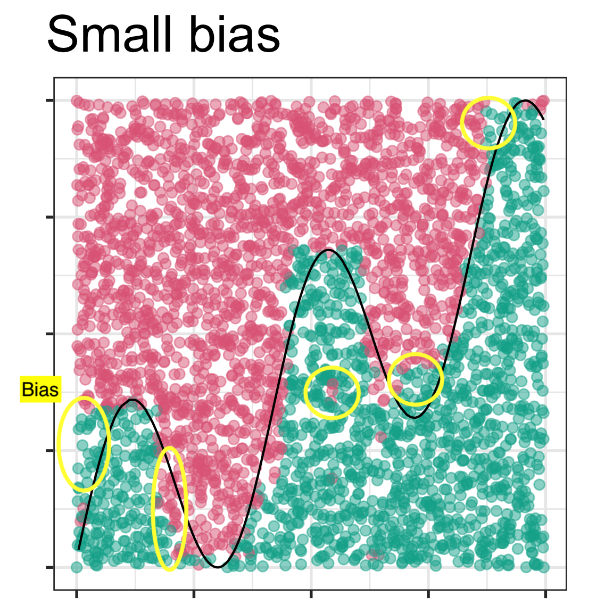

Write a projection matrix which would generate a 2D projection where the first data projection has variables 1 and 4 combined equally, and the second data projection has one third of variable 2 and two thirds of 5.
The columns are not orthonormal. The cross-product is not equal to 0.
2. Which of these statements is the most accurate? And which is the most precise?
A. It is almost certain to rain in the next week.
B. It is 90% likely to get at least 10mm of rain tomorrow.
Solution
A is more accurate, but B is more precise.
3. For the following data, make an appropriate training test split of 60:40. The response variable is cause. Deomstrate that you have made an appropriate split.
# A tibble: 4 × 2
cause n
<chr> <int>
1 accident 138
2 arson 37
3 burning_off 9
4 lightning 838
Solution
The data is unbalanced, so it is especially important to stratify the sampling by the response variable. Without stratifying the test set is likely missing observations in the burning_off category.
# A tibble: 4 × 2
cause n
<chr> <int>
1 accident 84
2 arson 21
3 burning_off 5
4 lightning 502
testing(bushfires_split) |>count(cause)
# A tibble: 4 × 2
cause n
<chr> <int>
1 accident 54
2 arson 16
3 burning_off 4
4 lightning 336
4. In the lecture slides from week 1 on bias vs variance, these four images were shown.
 
 
Mark the images with the labels “true model”, “fitted model”, “bias”. Then explain in your own words why the different model shown in each has (potentially) large bias or small bias, and small variance or large variance.
Solution
The linear model will be very similar regardless of the training sample, so it has small variance. But because it misses the curved nature of the true model, it has large bias, missing critical parts of the two classes that are different.
The non-parametric model which captures the curves thus has small bias, but the fitted model might vary a lot from one training sample to another which would result in it being considered to have large variance.
 
5. The following data contains true class and predictive probabilities for a model fit. Answer the questions below for this data.
Compute the accuracy, and accuracy if all observations were classified as Adelie. Why is the accuracy almost as good when all observations are predicted to be the majority class?
Solution
Accuracy = 33/35 = 0.94
Accuracy when all predicted to be Adelie = 30/35 = 0.86
There are only 5 observations in the Chinstrap class. So accuracy remains high, if we simply ignore this class.
Compute the balanced accuracy, by averaging the class errors. Why is it lower than the overall accuracy? Which is the better accuracy to use to reflect the ability to classify this data?
Solution
The balanced accuracy is 0.8. This is a better reflection on the predictive ability of the model for this data because it reflects the difficulty in predicting the Chinstrap group.
6. This question relates to feature engineering, creating better variables on which to build your model.
The following spam data has a heavily skewed distribution for the size of the email message. How would you transform this variable to better see differences between spam and ham emails?
7. Discuss with your neighbour, what you found the most difficult part of last week’s content. Find some material (from resources or googling) together that gives alternative explanations that make it clearer.
üëã Finishing up
Make sure you say thanks and good-bye to your tutor. This is a time to also report what you enjoyed and what you found difficult.